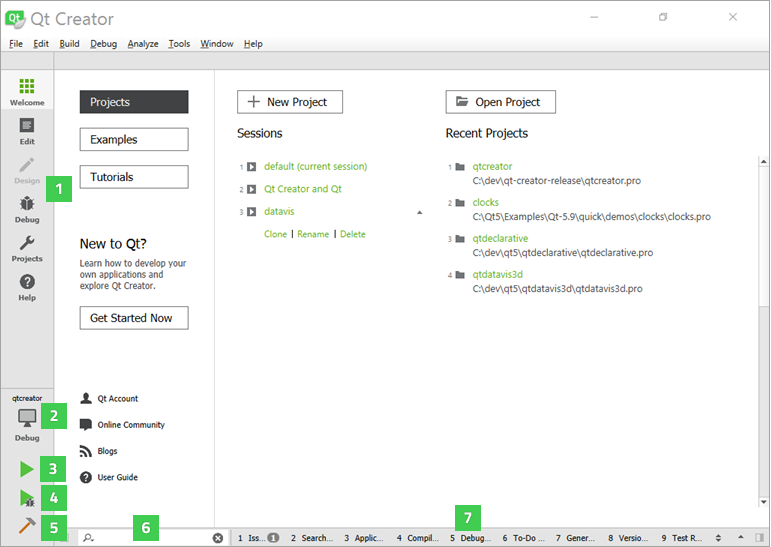
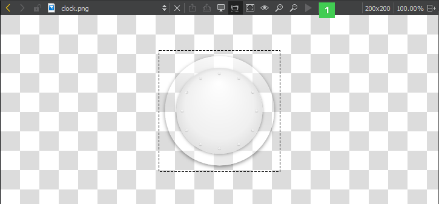

User Interface
When you start Qt Creator, it opens to the Welcome mode, where you can:
- Open recent sessions and projects
- Create and open projects
- Open tutorials and example projects
- Read news from the online community and Qt blogs
- Create or manage a Qt Account

You can use the mode selector (1) to change to another Qt Creator mode.
You can use the kit selector (2) to select the kit for running (3), debugging (4), or building (5) the application. Output from these actions is displayed in the output panes (7). You can use the locator (6) to browse through projects, files, classes, functions, documentation, and file systems.
For a quick tour of the user interface that takes you to the locations of these controls, select Help > UI Tour.
The following sections describe some of these controls in more detail:
Navigating with Keyboard
Qt Creator caters not only to developers who are used to using the mouse, but also to developers who are more comfortable with the keyboard. A wide range of keyboard and navigation shortcuts are available to help speed up the process of developing your application.
Useful Features
For a list of useful Qt Creator features described in other parts of the documentation, see Tips and Tricks.
Changing Languages
Qt Creator has been localized into several languages. If the system language is one of the supported languages, it is automatically selected. To change the language, select Tools > Options > Environment and select a language in the Language field. The change takes effect after you restart Qt Creator.
Viewing Images
Qt Creator opens image files in the image viewer.

Use the toolbar buttons (1) or keyboard shortcuts to:
- Export SVG images to pixmaps
- Switch between background and outline modes
- Zoom in and out
- Fit images to screen
- Return to original size
- Play and pause animated GIF and MNG images
Exporting SVG Images
If you receive a freely scalable icon in the SVG format from an UI designer, you can export it to several images of different sizes to create a set of pixmaps. You can then use QIcon::addPixmap() to add the pixmaps to icons in different modes and states.
Platform Notes
This section describes the cases where the behavior of Qt Creator depends on the operating system it runs on.
Location of Functions
Qt Creator uses standard names and locations for standard features, such as options or preferences. In this manual, the names and locations on Windows and Linux are usually used to keep the instructions short. Here are some places to check if you cannot find a function, dialog, or keyboard shortcut on macOS when following the instructions:
| For | Look In |
|---|---|
| Tools > Options | Qt Creator > Preferences |
| Help > About Plugins | Qt Creator > About Plugins |
| Keyboard shortcuts | Qt Creator > Preferences > Environment > Keyboard |
Location of Settings Files
Qt Creator creates the following files and directories:
- QtCreator.db
- QtCreator.ini
- qtversion.xml
- toolChains.xml
- qtcreator
- qtc-qmldump
The location of the above files and directories depends on the platform:
- On Linux and other Unix platforms, the files are located in
~/.config/QtProjectand~/.local/share/data/QtProject/qtcreator. - On macOS, the files are located in
~/.config/QtProjectand~/Library/Application Support/QtProject/Qt Creator. - On Windows XP, the files are located in
%SystemDrive%\Documents and Settings\%USERNAME%\Application Data\QtProjectand%SystemDrive%\Documents and Settings\%USERNAME%\Local Settings\Application Data\QtProject. - On Windows 7, the files are located in
%SystemDrive%\Users\%USERNAME%\AppData\Roaming\QtProjectand%SystemDrive%\Users\%USERNAME%\AppData\Local\QtProject.
High DPI Scaling
The operating systems supported by Qt Creator implement high dots-per-inch (DPI) scaling at varying levels. Therefore, Qt Creator handles high DPI scaling differently on different operating system:
- On macOS, high DPI scaling is forced, which means that Qt Creator allows Qt to use the system scaling factor as the Qt Creator scaling factor.
- On Windows, if no scaling environment variables are set, Qt Creator instructs Qt to detect the scaling factor and use it for Qt Creator.
- On Linux, Qt Creator leaves it to the user to enable high DPI scaling, because the process varies so much on different distributions and windowing systems that it cannot be reliably done automatically.
To override the default approach and always enable high-DPI scaling, select Tools > Options > Environment > Enable high DPI scaling. The changes will take effect after you restart Qt Creator.